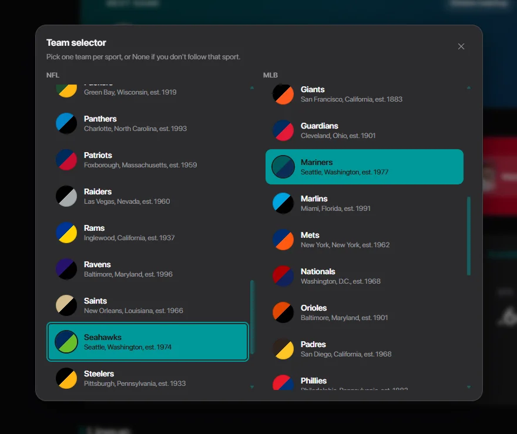
Jedes Team, deine Wahl
Alle 32 NFL- und 30 MLB-Teams, eins pro Sportart; oder keins, wenn dich eine Liga nicht interessiert.
Ein persönliches Sport-Dashboard als native Desktop-App für Windows - gebaut für den kurzen Blick beim Hochfahren. Der Cache zeigt sofort relevante Daten, während im Hintergrund frische Stände nachgeladen werden. Jedes der 32 NFL- bzw. 30 MLB-Teams lässt sich frei wählen - einen festen Standard gibt es nicht.
CheapSeats wird ausschließlich über den Microsoft Store vertrieben.
Eine kurze Tour durchs Dashboard, bevor du sie selbst installierst.
Wenig visuelles Rauschen, die wichtigen Zahlen zuerst und eine Erklärung für jeden Fachbegriff: Zwischen Hinsehen und Verstehen soll so wenig Zeit wie möglich liegen.
Hero-Karte zum nächsten Spiel mit Gegner, Anstoßzeit, Spielort und TV-Sender - inklusive Countdown bis zum Start.
Echtzeit-Play-by-Play bei laufenden Spielen: aktuelles Inning bzw. Viertel, Spielstand, Down-Distance bzw. Ball-Strike-Zähler und eine Timeline der Scoring-Plays.
Taskleisten-Blinken im Fokus, Toast beim Minimieren; einmalige Erinnerung zu Anstoß oder erstem Wurf, optionale Spielstand-Alerts, gedrosselt auf ein Update alle 5 Sekunden.
Automatisch gewählte Schlüsselspieler-Karte (QB bzw. Starting Pitcher) mit Saisonwerten und Trend gegenüber dem Karrieremittel.
Visuelle Aufstellung auf Feld oder Diamond, angepasst an die Sportart - Offense-Gruppen im Football, Feldpositionen im Baseball.
Vollständige Standings mit W/L, Heim/Auswärts, Run-Differential und Streak - plus Glossar-Tooltips für jede Abkürzung.
Stadiondaten (Baujahr, Kapazität, Maße, Belag) neben kuratierter Saisonhistorie: Trendkurven, Meistertitel, All-Time-Rekorde.
Filterbare Kaderliste nach Positionsgruppe, suchbar nach Name und Nummer - plus automatische Playoff-Brackets in der Postseason.
Noch nie ein Football- oder Baseballspiel gesehen? Kein Problem. Eine kurze Tour zeigt beim ersten Start, wo was ist, jeder Fachbegriff erklärt sich per Tooltip, und das Regelwerk beantwortet den Rest.
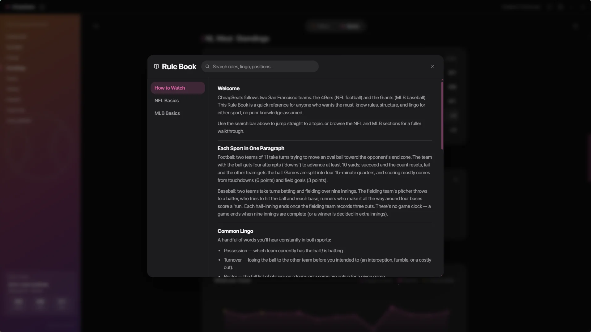
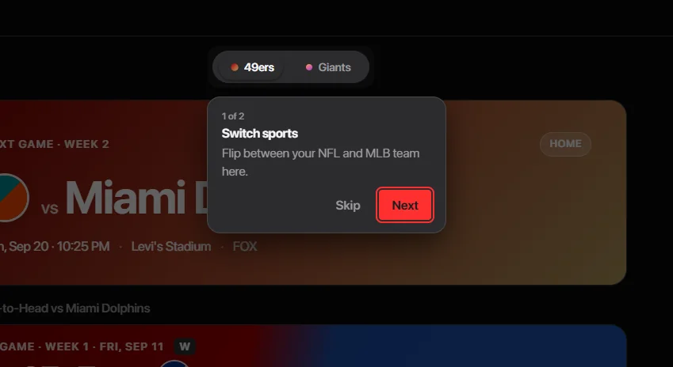
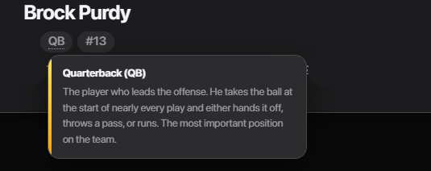

Alle 32 NFL- und 30 MLB-Teams, eins pro Sportart; oder keins, wenn dich eine Liga nicht interessiert.
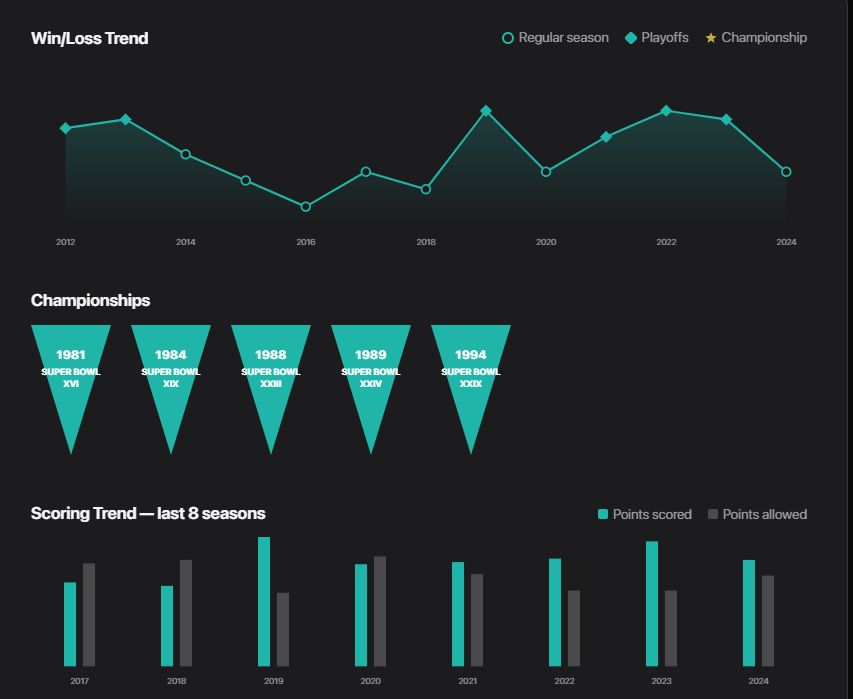
Win/Loss-Kurven, Meistertitel und Scoring-Trends der letzten acht Saisons.
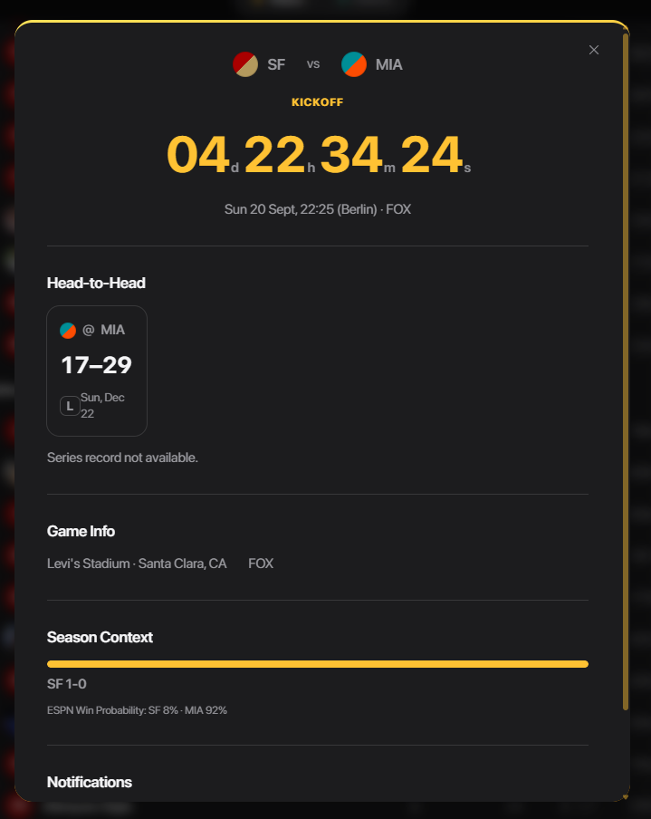
Tage, Stunden, Minuten, Sekunden; dazu Head-to-Head, Spielinfos und Saisonkontext.
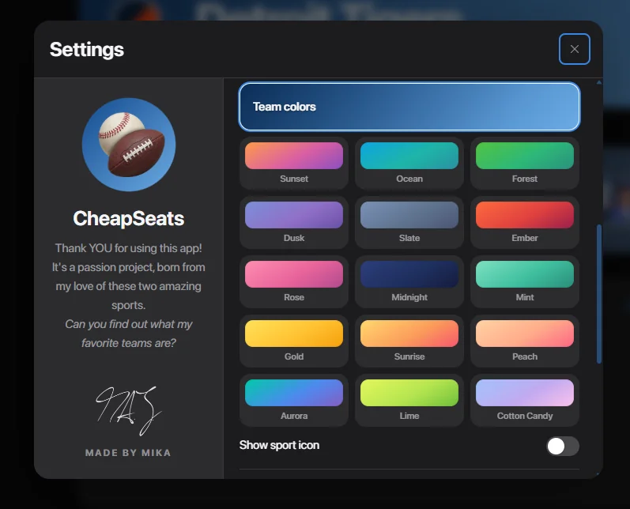
Team-Farben oder einer von 15 Farbverläufen, Hell- oder Dunkelmodus und auf Wunsch das Sport-Icon: CheapSeats passt sich deinem Geschmack an.
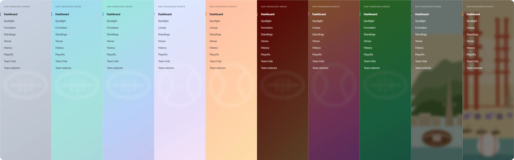
Dieselbe defensive Architektur, dieselben Daten - responsiv vom Desktop bis aufs Telefon. Die Seitennavigation merkt sich die Scroll-Position, sodass sich Bereiche sofort anspringen lassen.
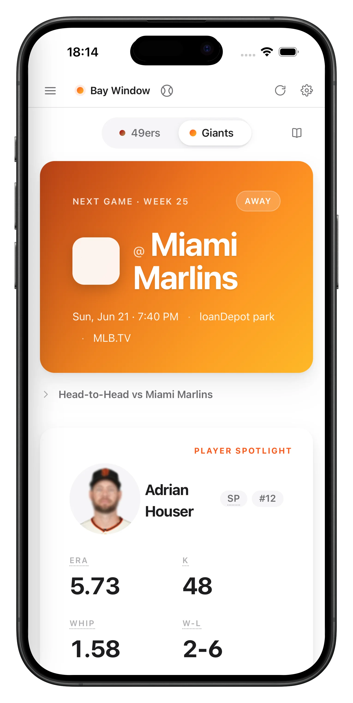
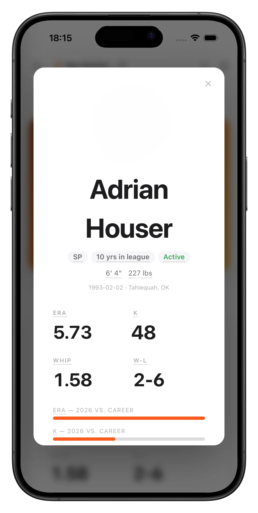
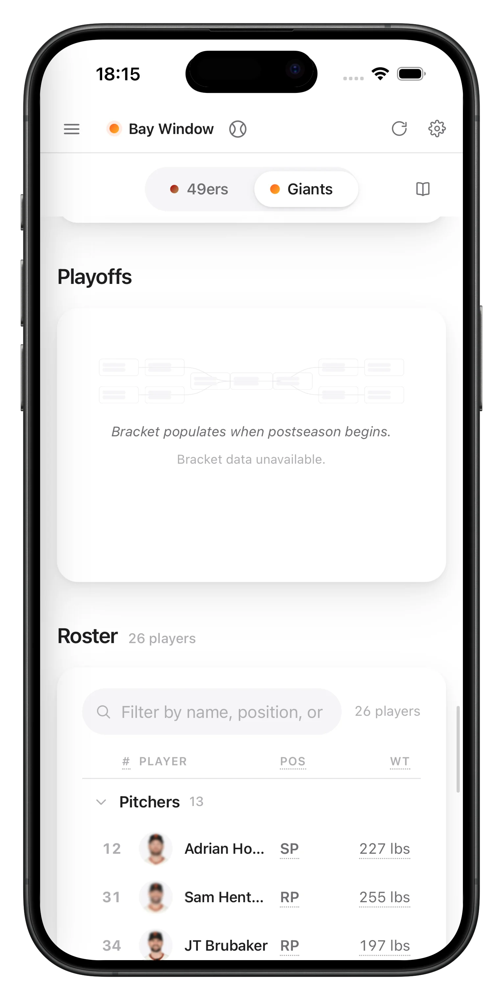
Cache-first und ausfallsicher: Daten sind beim ersten Start sichtbar, jeder API-Aufruf läuft isoliert, und Updates kommen über den Microsoft Store.
Die App ist auf geringe kognitive Last und schnelles Scannen ausgelegt. Der Cache-first-Ansatz macht Daten beim Start sofort sichtbar; die Seitennavigation mit Scroll-Tracking lässt zwischen Bereichen springen. Tooltips erklären durchgehend die Fachbegriffe - auch für alle, die mit US-Sport (noch) nicht vertraut sind.
Ein kurzer Rückblick auf die bisherigen Releases.